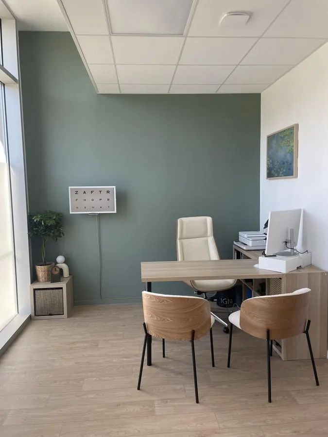
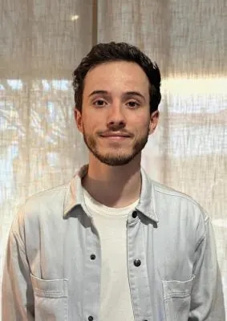

Espace de Santé Saouzelong Canal · Toulouse
Orthoptiste à Toulouse
Clément Maupomé
Un bilan visuel adapté à chacun, de la naissance au grand âge, coordonné avec tous vos professionnels de santé.


- Bilans dès 9 mois
- Tiers payant, sans avance de frais
- Accessible PMR, rez-de-chaussée
- Métro ligne B, Saouzelong
Pour qui ?
Choisissez la situation qui vous concerne pour trouver la bonne information.
Bébé et enfant
de 9 mois à 16 ans
Trouble du spectre de l'autisme
bilan adapté à chaque personne
Adulte
à partir de 16 ans
Personne en situation de malvoyance
DMLA, glaucome, rétinopathie…
Domaines de prise en charge et formations
Chaque domaine s'appuie sur un diplôme ou une formation spécifique.
Trouble du spectre de l'autisme
- Diplôme d'Université Troubles du Spectre Autistique : actualisation des connaissances et des pratiques professionnelles — Université Toulouse – Jean Jaurès (2026)
- Formation « Autisme et neurovision : la place de l'orthoptiste » (UNRIO)
Ces formations permettent de proposer un bilan neurovisuel et une prise en charge adaptés aux personnes présentant un trouble du spectre de l'autisme, verbales ou non verbales.
Troubles neurovisuels acquis
- Formation « Troubles neurovisuels acquis chez l'adulte – approche pluridisciplinaire » (CADET, 2026)
Cette formation permet d'évaluer et de rééduquer les troubles visuels qui suivent une lésion cérébrale, en lien avec l'équipe qui suit le patient.
Orthoptie
- Certificat de capacité d'orthoptiste — Université de Toulouse (2022)
Ce diplôme national permet d'exercer l'ensemble des bilans et rééducations orthoptiques.
Dépistage du bébé et de l'enfant
Dès 9 mois, puis à 3–4 ans et 5–6 ans, avec un matériel adapté aux plus jeunes.
En savoir plus →Bilan orthoptique et vision binoculaire : troubles visuels, maux de tête et fatigue visuelle
Bilan orthoptique et rééducation : vision double ou qui fluctue, maux de tête, fatigue visuelle, vertiges.
En savoir plus →Bilan neurovisuel : troubles du neurodéveloppement et apprentissages
Un examen visuel pour tout trouble du neurodéveloppement (TDAH, dys, TDI…), et un bilan quand la vision pèse sur la lecture, l'écriture ou la copie.
En savoir plus →Vertiges et visuo-vestibulaire
Vertiges persistants, dépendance visuelle, mal des transports : rééducation orthoptique de l'équilibre visuel, complétée si besoin par le panneau de Bauwens.
En savoir plus →Basse vision
Réadaptation visuelle au quotidien : DMLA, glaucome, rétinopathie diabétique, décollement de rétine.
En savoir plus →Correction optique
Primo-prescription et renouvellement de correction optique, après un bilan visuel.
En savoir plus →Comment ça se passe ?
De l'ordonnance au suivi, en cinq étapes.
L'ordonnance
Votre médecin prescrit un bilan orthoptique. Pour une primo-prescription ou un renouvellement de correction optique, l'accès direct est possible sous conditions.
Le rendez-vous
En ligne sur Doctolib, à toute heure, ou par téléphone au 06 62 29 31 77.
Le bilan
Sa durée est adaptée au trouble et à votre demande, dans le respect de la nomenclature de l'Assurance maladie et des recommandations de la HAS.
Le compte rendu
Il est adressé à votre médecin pour coordonner le suivi.
Les séances
Si besoin, une rééducation est proposée, avec un nombre de séances adapté au bilan.
À apporter : l'ordonnance, la carte Vitale, l'attestation de mutuelle si vous en avez une, vos lunettes actuelles et leurs dernières ordonnances, les derniers comptes rendus si vous les avez (ophtalmologiste, autres bilans) et, pour un enfant, son carnet de santé.
Le cabinet en images
Un cabinet lumineux, en rez-de-chaussée, équipé pour tous les âges. Découvrir le cabinet →


Une prise en charge personnalisée et coordonnée
Au sein de l'Espace de Santé Saouzelong Canal, du nourrisson à la personne âgée.